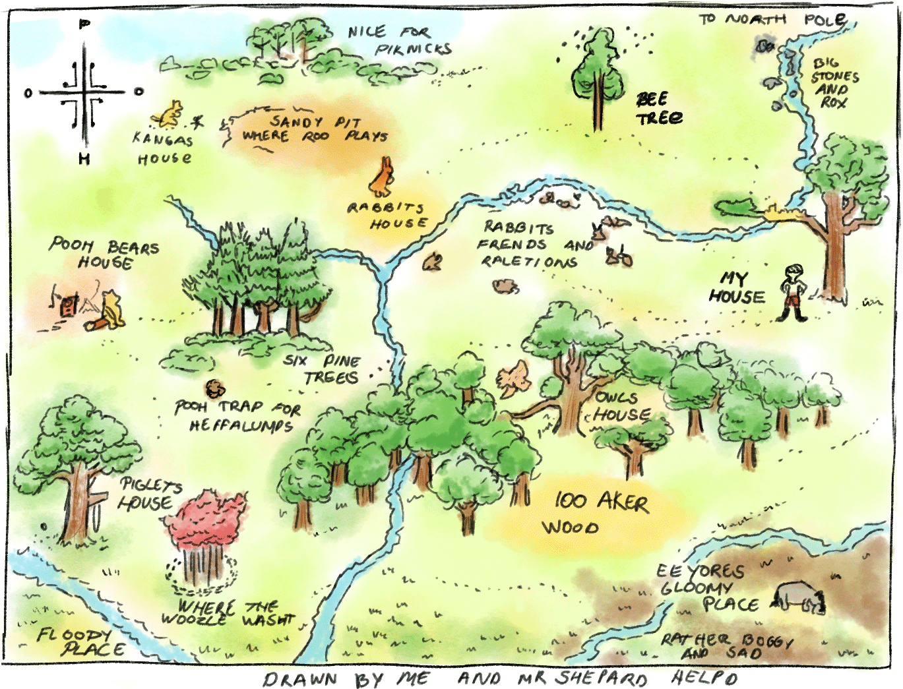

-
Winnie-The-Pooh
A Brief History
Dilay Bayraktaroglu
VID-II 05/2023
Winnie-The-Pooh
Introduction
Once upon a time, there was a man that lived by the name of A.A. Milne, who was blessed with a son named Christopher Robin. Christopher had a cherished teddy bear, which his father found to be a source of inspiration for a story. The teddy bear was called Winnie, and the story gained immense popularity, prompting A.A. Milne to write many more stories featuring Winnie and his friends. A magical place called the Hundred Acre Wood was home to these characters, and their tales became a favorite among children worldwide. Even today, young and old alike continue to adore these stories. And thus began the journey of A.A. Milne as he wrote about Winnie-The-Pooh!
-
Winnie-The-Pooh
In the stories, Winnie the Pooh has many friends, including Piglet, Eeyore, Kanga, Roo, and Tigger. Owl and Rabbit were also his friends, but they were created by A.A. Milne's imagination. *The stories are set in a forest called Ashdown Forest in England.* Children loved the whimsical stories of childlike innocence, and even today, people of all ages enjoy reading about Winnie the Pooh and his friends.
hier komt nog extra info over winnie's vrienden
 tweede punt in tijd -
Winnie-The-Pooh
Winnie the Pooh has been around for almost a century, and he has had many adventures over the years! It all actually started in 1924, when A.A. Milne wrote a poem called "Teddy Bear." The poem was published in a magazine called Punch, and it was illustrated by E.H. Shepard. People loved the poem so much that A.A. Milne decided to write more stories about a bear named Winnie the Pooh.
Winnie-The-Pooh
In 1926, the first Winnie the Pooh book was published. The book was called "Winnie-the-Pooh," and it was a big hit! Children all over the world loved the silly old bear and his friends. Winnie the Pooh was soon joined by many new characters, like Piglet, Eeyore, Kanga, Roo, and Tigger. They all lived in a magical place called the Hundred Acre Wood, where they had many fun adventures together!
derde punt in tijd -
Winnie-The-Pooh
Over the years, Winnie the Pooh has continued to be a beloved character. He has appeared in many books, movies, and TV shows.
Winnie-The-Pooh
In 1961, Walt Disney bought the rights to Winnie the Pooh, and he made many movies and TV shows about the silly old bear and his friends. Disney also created a whole line of Winnie the Pooh merchandise, including toys, clothes, and home decor.
vierde punt in tijd -
Winnie-The-Pooh
In recent years, Winnie the Pooh has continued to be popular. In 2011, a new Winnie the Pooh movie was released, and it was a big hit with both kids and adults. Winnie the Pooh has also appeared in many video games and apps, and he is still loved by children all over the world.
even though Winnie the Pooh has been around for almost a century, he is still as beloved as ever. He has had many adventures over the years, and he has made many friends along the way. And he will continue to be a beloved character for many years to come!
vijde punt in tijd -
Winnie-The-Pooh
The end